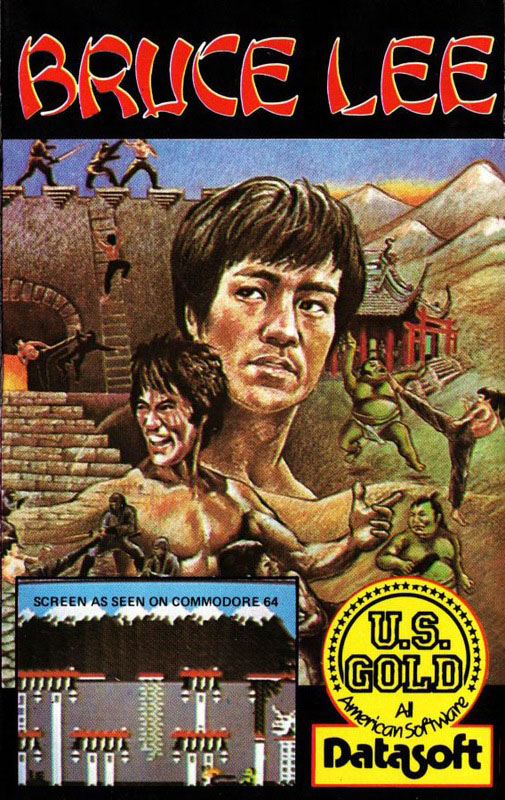
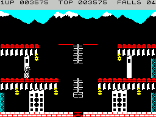
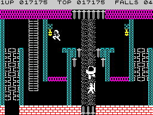

Bruce Lee


{kind=link}

| Publisher: | US Gold Ltd |
| Price: | £7.95 |
| Year: | 1985 |
| Source: | CRASH, Issue 16 |

Ah so! Another platform game but this time based on the antics of the worldly hero of the east, Bruce Lee. Bruce has returned to the land of his forefathers to destroy a wicked wizard, should he succeed he will be rewarded with treasure beyond the capacity of his knap-sack which seems a bit of a shame.
Bruce’s first task will be to find his way into the underground chamber by discovering the secret entrance. I won’t be giving much away when I tell you that this can be found in the floor of the middle entrance hall but it will not open until Bruce has collected all of the lanterns from all three rooms, that’s just to get into the underworld where the real work starts. As Bruce makes his way across the other screens he will face many bizarre dangers which include electric charges that shoot across the gaps between platforms, or the awesome exploding t’sing-lin (bushes) that appear from nowhere.

The most persistent and annoying of Bruce’s problems go by the name of Green Yamo and the Ninja. These two characters devote themselves to Bruce’s downfall. No matter where he is in the game he will always be pursued by these two. For Bruce to be successful the player must guide him through the fights as well as the maze. By giving the appropriate commands Bruce can be made to duck, thump or kick — his flying kick is the most devastating. The other characters have the same ability except they are unable to duck, Hard luck Yamo. Bruce will survive three blows before he loses a life, his opponents will lose consciousness after two or three blows which gives Bruce a brief respite to gather the lanterns and be on his way to find the button and kill the wizard.

Points are awarded for collecting lanterns and laying out any of the opponents, 2000 points are to be had simply for entering a new room. With every 30,000 points a new life is given free. The total points scored for each player are shown at the top of the screen together with the current high score and the number of falls remaining before the game is over.
One rather useful feature of Bruce Lee is that the game allows allows the player to compete against either the computer or other players. Apart from the first option of playing against the computer a second option allows an opponent to assume the role of Yamo. Alternatively a third option allows two players to take turns in being Bruce, against the computer or with a third opponent as Yamo.
CRITICISM
‘Bruce Lee is one of the best action packed animated games on the market. The graphics are very detailed, lively and good looking, they add a bit of zest to the game. What makes this game different is that you play a key character actually fighting against your enemies who are ace Kung Fu artists. The way that Bruce punches, kicks and ducks is exceptionally good and terrific fun simply to knock the stuffing out of your opponent. One of the strange things about this game is that when you leap he looks like a trained ballet dancer. As the game progresses it gets considerably more difficult. I must say that I found this game terrific fun, US Gold have really got the ingredients right this time.’
‘There’s something about this game that makes me come back to it for more, in fact it’s one of the few games that I have ever bothered to complete and the novelty still hasn’t worn off. I think that Bruce Lee must be one of the most original games I’ve seen. It has well drawn and animated graphics which make up for the poor sound. I loved the way that you actually make physical contact with your enemy (eg a punch on the nose or a kick in the ribs) instead of just zapping with a photon lazer phaser, the game gets a certain feel to it (I know, I’m a sadist). Another nice touch is the way the two opponents get into a fight if they get in each other’s ways. I really enjoyed playing Bruce Lee and although it was easy to complete I will keep playing it just because I like beating up the nasties.’
‘Although Bruce Lee does not have the complexity or size of Jet Set Willy you are constantly waging a battle with the Green Yamo and the nasty Ninjas. Fighting is achieved in typical oriental style with several movement options, kick, chop, jump or duck. Initially this took a little getting used to. As you battle deeper into the palace you encounter other dangers and hazards which are more typical of a platform game, these include electric charges, exploding plants and daggers. The sound and graphics are good, the game itself is very good and great fun. It’s one of the most addictive I have played recently.’
COMMENTS
| Control keys: | O/P left/right, Q/A up/down, Z-M chop or kick |
| Joystick: | Kempston, Protek or Sinclair 2 |
| Use of colour: | Very good |
| Graphics: | Excellent |
| Sound: | Nice tune but mainly spot effects |
| Skill levels: | 1 |
| Lives: | 5-10 depending on number of players |
| Screens: | Quite a lot! |
| General Rating: | Excellent fun packed game. |
| Use of Computer: | 85% |
| Graphics: | 90% |
| Playability: | 89% |
| Getting Started: | 80% |
| Addictive Qualities: | 92% |
| Value For Money: | 85% |
| Overall: | 91% |